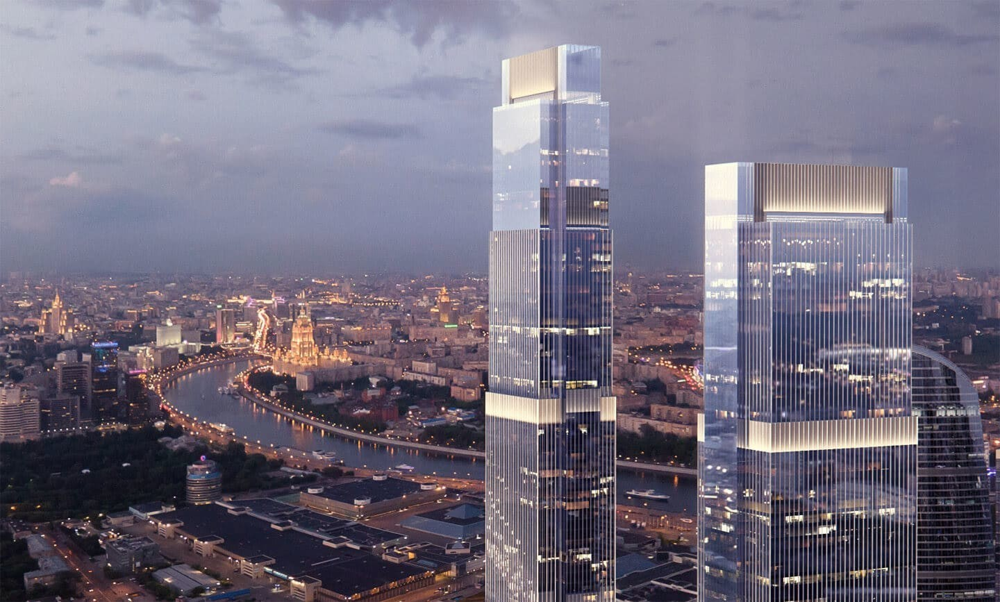

Neva Towers
Современные апартаменты с захватывающими видами и собственным парком с открытым бассейном

Характеристики
- Высота:338 м (Башня 1) и 290 м (Башня 2)
- Годы строительства:2016-2020
- Девелопер:Renaissance Development
- Застройщик:СТ Тауэрс
- Общая площадь:357 000 м²
- Скорость лифтов:8 м/с
- Количество этажей:77 (Башня 1) и 63 (Башня 2)
- Количество машино-мест:2040 (в подземной части 1700, в наземной 340)
- Участок:17-18
О башнях
Конфигурация башен подчеркнута лаконична: форма корпусов-пластин дополнена небольшими сдвижками центральных частей, создающих подобие остова башен, который облекают с двух сторон сужающиеся ярусы. Пропорции ярусов, которые с каждым витком увеличиваются, были выбраны в соответствии с классическим «золотым сечением». Стремление к красоте усложнило задачу архитекторам, которые вместо стандартного равномерного распределения технических этажей по высоте здания, вынуждены были размещать их на верхних отметках ярусов, в соответствии с «золотой» разбивкой.
Особое внимание при разработке проектных планов уделялось максимальной экономии электроэнергии. Холодильный центр башни «Нева» использует способ свободного охлаждения, при переменном расходе испарений и конденсаторов, что значительно экономит электроэнергию. Это наглядно показывает инновационность всего внутреннего оборудования строения.
Как добраться
📍 Адрес: 1-й Красногвардейский пр., 22, стр. 1, Москва
🚇 Метро: Выставочная, Международная, Деловой центр